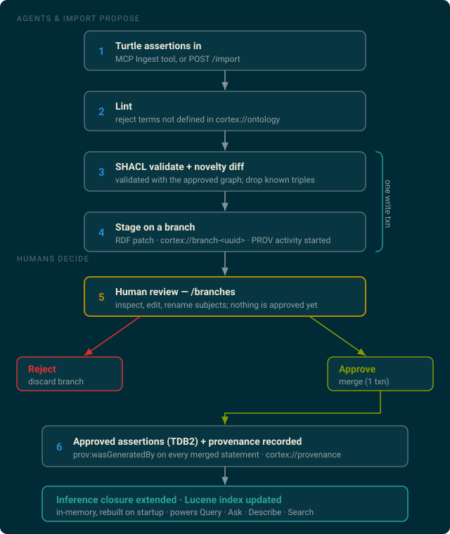
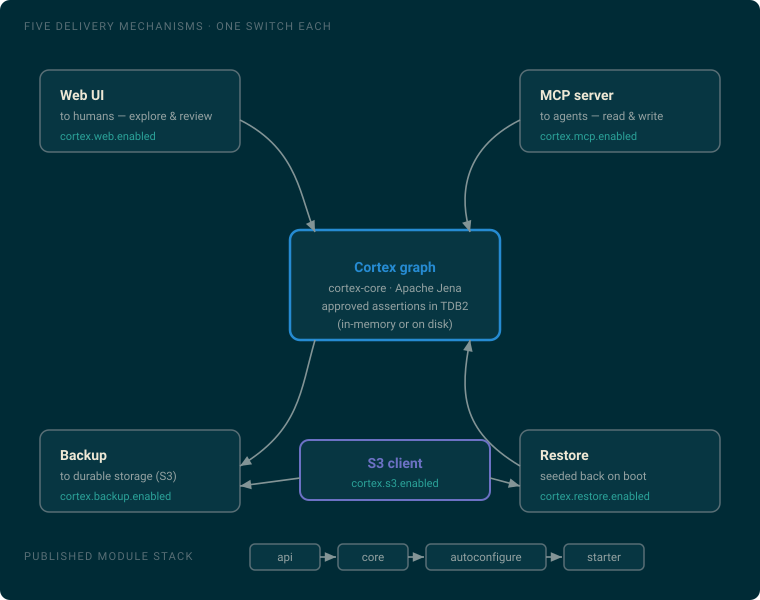
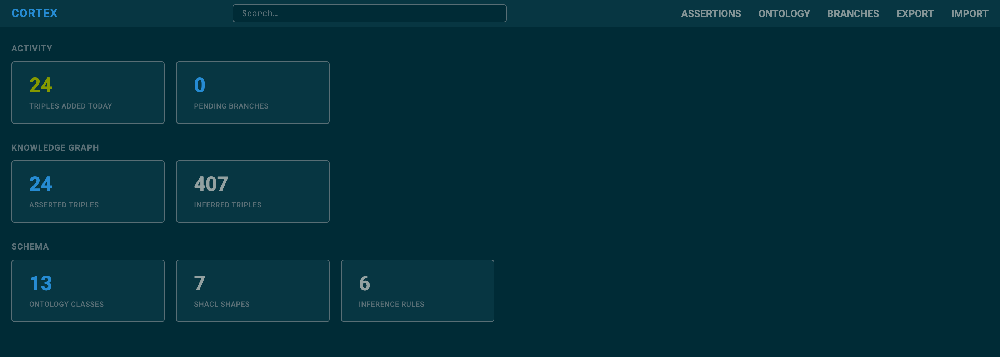
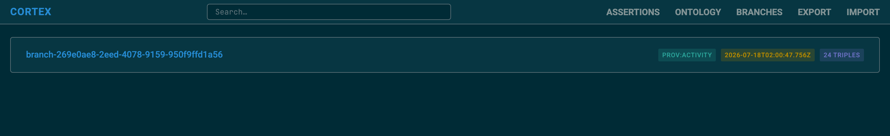
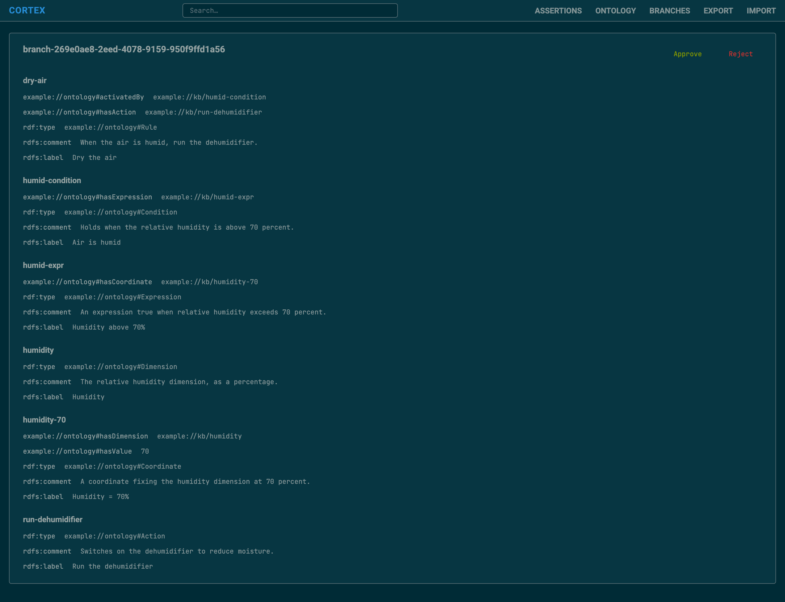

Architecture
Cortex is a knowledge-graph memory that agents propose to and humans approve. This page explains the storage model, the ingestion pipeline, and how the pieces are packaged.
Storage model
Approved facts — assertions — are the source of truth. They live in an Apache
Jena TDB2 store: in memory by default, or on disk when
cortex.persistent=true. Everything else is a derived cache:
- The inference closure (statements entailed by your rules) is materialised into a separate in-memory dataset — the read model queries and search run against.
- The full-text index is an in-memory Lucene index over
rdfs:labelandrdfs:comment.
Both are rebuilt from the assertions on every startup, regardless of persistence — so there is no separate index to manage, and a restored or reloaded store is immediately consistent.
Ontology grounding
You bring three classpath resources, each a list merged in order:
| Resource | Property | Role |
|---|---|---|
ontology.ttl | cortex.ontologies | The OWL vocabulary — the classes and properties assertions may use. |
ontology.shapes | cortex.shapes | SHACL shapes ingested data must structurally conform to. |
ontology.rules | cortex.rules | Jena rules that derive inferred statements. |
Linting is a closed-world vocabulary check: every class and property used must
be defined in the ontology, and only rdf:type, rdfs:label, and
rdfs:comment are allowed beyond it. SHACL validation is the
structural check, run over the union of incoming and already-approved data so a new statement
may rely on approved ones to conform.
The ingestion pipeline
Nothing an agent or an /import submits reaches the approved graph directly. Every
write is proposed, staged, and gated on human approval:

- Lint & validate & diff, then stage — linting, SHACL validation, the
novelty diff (dropping triples the graph already contains), and staging onto a new named graph
cortex://branch-<uuid>happen in one write transaction, so the verdict and the diff can never race. If every incoming triple is already approved, nothing is staged. - Review — the branch shows up at
/branches, where a reviewer can delete statements, edit objects, and rename subjects before deciding. - Approve or reject — approval merges the branch into the default graph, closes the provenance activity, and records provenance for every merged statement, again in one write transaction. Rejection simply discards the branch.
Provenance
Cortex records lineage in PROV-O. Staging a branch
creates a prov:Activity with a start time; approving it sets the end time and, for
every merged statement, writes a reification linked with prov:wasGeneratedBy into
the reserved cortex://provenance graph. That graph is excluded from inference and
queried separately — it is how the Describe view attaches a "known since" timestamp to
each fact.
cortex:// is Cortex's own — the provenance
graph and branch graphs live there. Your ontology uses its own namespace (the example uses
example://ontology#). The provenance graph is not a branch and is never rendered as
one.
Inference & search
A Jena GenericRuleReasoner materialises derived statements from your
ontology.rules, bound to the ontology as schema. The full closure is recomputed once
at startup; each approval then extends it incrementally with only that approval's newly
added statements — and the Lucene index is patched with just those, so indexing stays cheap.
Query, Ask, Describe, and Search all read the inference dataset, so results always include
entailed statements.
Modules & delivery mechanisms
The auto-configuration is grouped by how the graph is delivered — to the process, to humans, to agents, to durable storage, and seeded back from it — not by domain. That grouping is why each mechanism is a single on/off switch.

The S3 client is deliberately separate from backup and restore: both require it, independently
of each other, so cortex.s3.enabled is a real switch rather than a flag that must
always track a consumer. See Configuration for the
details of backup and restore.
The web UI
The starter serves a small server-rendered UI for exploring the graph and reviewing what agents have staged.



See the full route table in the getting-started guide.